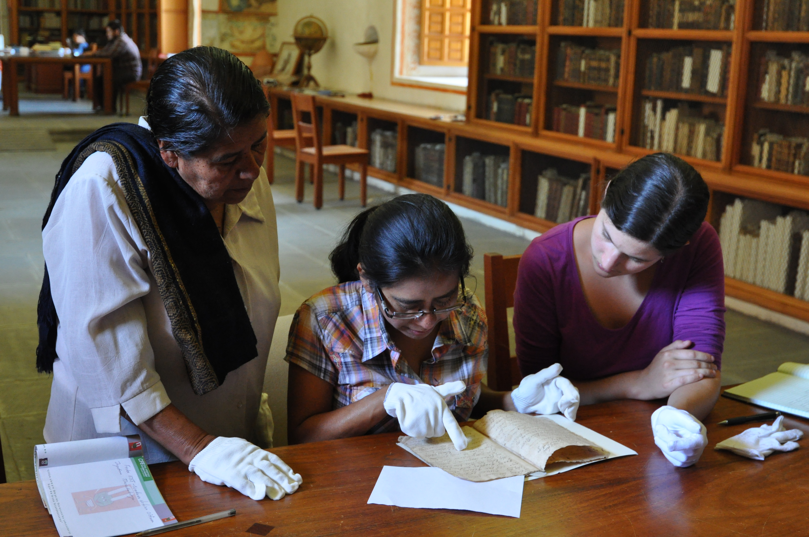

San Jerónimo Tlacochahuaya
a Zapotec town in the Tlacolula Valley: the view from Cerro Negro

Examining Colonial Zapotec documents
with María Mercedes Méndez Morales and Soledad Hernández at the Burgoa Archives in Oaxaca City, July 2014

Linguistics Field School REU
researchers and local collaborators at the Mitla archeological site, June 2016